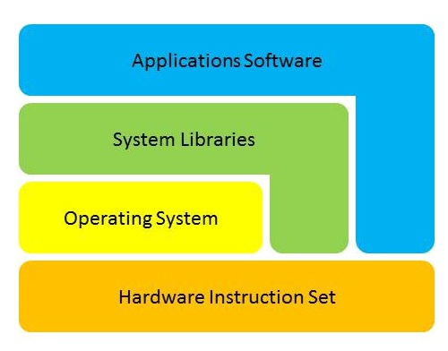
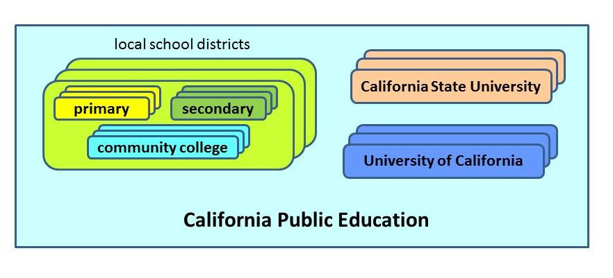
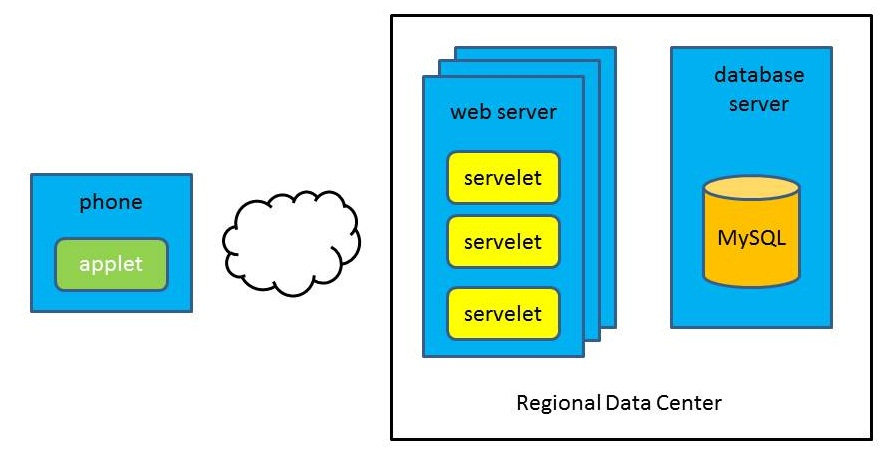
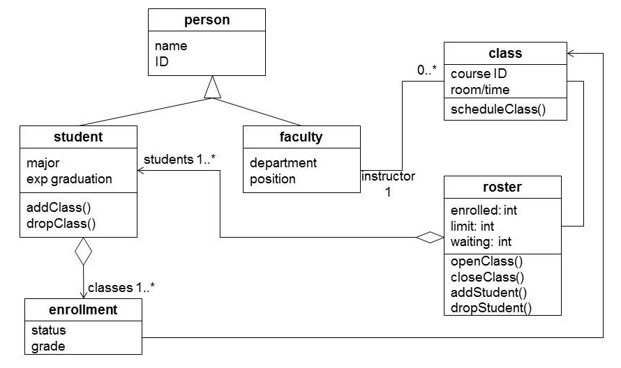
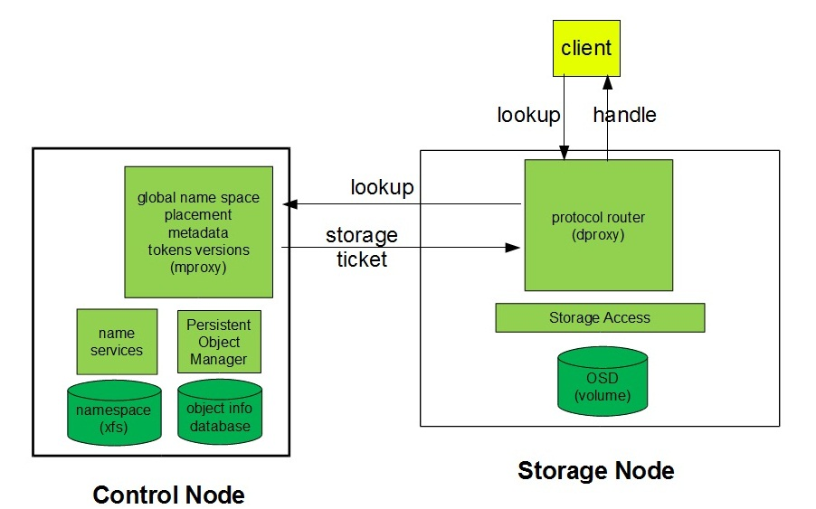
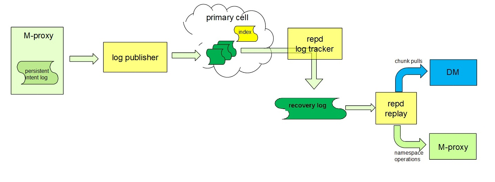
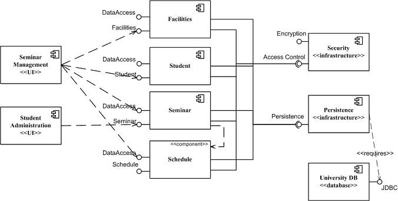

One of the rewarding things about programming (as a creative endeavor) is the ease and speed with which we can translate plans, ideas, and even whims into reality. This teaches us to view software as disposable. We regularly build things, see how they work, and use the lessons we learn to redesign and refactor the code many times. Such iterative development is well suited to many problems ... but as projects get larger it becomes untenable (e.g. The Advanced Automation System that IBM spent six years and $2B developing for the FAA). If a project is too large to be "thrown away" we must be able to convince ourselves that it will work before we invest vast amounts of time and money in its construction. We model things that we propose to build:
A model is a smaller or simplified representation of a larger or more complex object or system. It is probably worth while to divide models into two broad classes:
This distinction is important because the form in which we choose to represent a model is primarily driven by the goals we want that model to achieve. Representational and analytical models have very different goals: The former are intended to be evocative, while the latter are intended to be solved or executed in a way that is predictive of the behavior of the intended system.
Because representational models are much simpler than the full system, they can be more easily grasped. Because analytic models are smaller and simpler than the real system, they can be constructed much more quickly and economically. They give us the opportunity to identify issues early, and perhaps to learn from mistakes before we are committed to them. Through models, we can examine (in hours or days) systems that might take decades to actually build and test. A model's simplicity may make it much easier to understand and analyze than the corresponding components in a complete system. Additionally it may be possible to manipulate mathematical models or simulations in ways that would be difficult or expensive to do in a real system, and thus to gain information that would be otherwise difficult to obtain.
Different types of models are likely to have very different life spans:
The following chapters will briefly overview the major types of representational and analytic models, and the principles that can guide their construction and use. If we have a clearer notion of what we want a particular model to accomplish for us, we are more likely to build the right kind of model, which (in turn) will be more likely to give us the information we need to ensure that our software works as well in a computer as it did in our imagination.
Five centuries ago, Alchemists sought to understand an increasingly complex world through the process of Solve et Coagula:
We still use essentially the same paradigm to understand complex systems:
As to the question of what form these simplified representations should take, we generally come to understand complex systems in terms of
|  |
|  |
|  |
For many purposes, any graphical representation that communicates the required information (e.g. the three above) can be a reasonable choice. But, as we attempt to describe more complex systems we need to be able to express a much wider range of relationships and a richer set of attributes. This requires a richer language, who's nuances may be much less obvious to the un-trained reader.
We need richer graphical forms to describe the structure and interactions in complex computer systems. If those new vocabularies are to be subtle and complex, it would probably be much more efficient to adopt a single standard than to have every team make up their own. Communication works much better when we all speak a common language.
In the 1950s engineers layed the foundations by adopting flow-charting conventions (similar to circuit diagrams) to provide graphical descriptions of a program's flow-of-control. These were very popular for a while, but were inadquate to describe block-structured code, object hierarchies, and other features of more sophisticated languages and systems. In the 1990s a group of engineers proposed a more comprehensive and well-integrated set of modeling conventions that became known as the Unified Modeling Language (UML).
UML, with its richer graphical vocabulary is capable of communicating more information in a (still relatively understandable) Deployment Diagram:
The relationships to be expressed may become sufficiently complex as to require a much more formalized representation (e.g. UML class diagrams). Such diagrams may rival the expressive power of a programming language, but this comes at the cost of obviousness, and may be impenetrable to people who have not been trained in UML and require study even for people who have the training.

If the primary motivation for using graphical representations is the ease with which they can be absorbed, there is a point at which added expressive power becomes self-defeating. To ensure good communication, you are probably better off using the simplest model that will communicate the relationships you need to describe.
One of the most common interaction depictions is the exchange of messages between distinct components: who sends what information to whom via what protocol. This is usually done with the addition of arrows and labels to a structural diagram:

UML Sequence diagrams provide a much more powerful language for describing message interchanges ... but at that point we are probably no longer trying to describe an architecture, but rather a protocol.
If the data being exchanged between components is a stream (rather than discrete requests), it may be more appropriate to represent this with an information flow diagram (one of the few common system depictions not included in UML). An information flow diagram usually includes:

Another commonly represented interaction is call structure: who calls whom. UML component diagrams are a relatively intuitive graphical representation of both static and dynamic invocation relationships. The exposed interfaces can be high level (e.g. classes) or detailed (individual methods).

A mathematical model represents (in some mathematical form) critical aspects of a system. The advantage of such representations is that they can be solved or evaluated (using mathematical techniques). The primary purpose of mathematical models is to estimate interesting system characteristics (e.g. size or performance) before the system is actually built. Such models may be used to justify requirements, to estimate what a system will be capable of achieving, or to determine whether or not a system is likely to meet its requirements. After a system has been built, mathematical models can help us to understand why it behaves in the way it does, to predict how it will behave in new situations, or to reasonably infer quantities that cannot be directly measured.
A mathematical model may be as simple as a single expression to be evaluated, or extremely sophisticated: requiring staff years to develop, review, and refine. Some mathematical models are ephemeral (e.g. a back of the envelope storage requirement estimate), while others may be maintained over the life of the product (e.g. a comprehensive availability model). Some models can be developed and understood by anyone with a high school education, while others may only be understandable by a hand-full of domain experts.
Simple mathematical models are very valuable for estimating throughputs, capacities and other characteristics of a system. Most such models are probably understandable to anyone who has had a year of high school algebra. Despite their simplicity, such computations can be very useful in understanding a problem.
Consider, for instance, a home music server. How much disk space should it have?
Later, when we have built the music server, we need to estimate the staffing that will be required to handle support calls:
If we expect to 20,000 units in the first three months, what call volume should we expect?
If these calls were spread evenly throughout three months of Mon-Sat 9-5 (600 hours), we would need 2.3 people answering the phone. Actually the even spreading assumption is unreasonable ... but queueing theory can help us with this problem.
We have observed that our power supplies seem to experience failures about once every 50,000 hours. We are building a system that has dual power supplies, but can function with one. We expect to be able to replace a failed power supply within 20 hours of the time it fails. What is the probability that a customer will (during a single year) experience an outage due to the failure of both power supplies.
In models like these, the equations themselves tend to be simple and obvious. The trick is usually in getting reasonable values for the coeffiecients. In many cases we can find a good basis for estimation (e.g. the size of the files in our own music collection, or the rate at which we are currently finding bugs). Even when we don't know what the real numbers are, it is often surprisingly easy to "put a fence around them":
We need to estimate the throughput required for speech recognition system. How many words does a person dictate per hour?
5x60x60 = 18,000 words per hour.
0.5 x 60 x 60 = 1440 words per hour
Often, even very crude estimates are enough to tell us whether or not an approach might be practical ... and that is (often) all we needed to know.
A great many interesting things can be expressed (or approximated) as simple linear functions. There are, however, many interesting things that cannot be expressed so simply. More advanced techniques have evolved to address such problems. Every discipline has such tools. In other disciplines they include The Calculus, Complex Analysis, Tensors, Fourier transforms, etc. In Computer Science we have Queuing theory, Markov models, and discrete event simulations. These techniques have proven to be extremely useful in modeling the behavior of computer systems ... and you would do well to learn (at least) a little about them. Even if you never develop the ability to build such models yourself, you should know that they are available, and the types of problems to which they can be applied.
When we looked at the expected support calls that would be generated by our music server, we estimated that in the first three months we would receive:
For a queue model:

Queueing theory is the study of systems of customers and servers. In many cases, given a network of services, and distributions for arrival and service times, it yields closed-form solutions for (distribution functions for) expected throughput and waiting times. Such models are often crucial in estimating how a system will behave under load. This model tells us that we need one person for the problem reports and perhaps three people for the set-up calls. It also shows us the cost of high resource utilization: If we want our support people to spend 90% of their time handling calls, the waiting times become unacceptable.
In the simple model discussion we estimated the probability of a dual power supply failure. That simple estimate was based on the assumption that the failures were completely independent of one another. If we consider more complex systems (with many more components, some in series, some in parallel, each with different failure rates and repair times), many with complex inter-dependencies the computation becomes much more complex.
Complexly interacting systems are often best represented in state models. Markov models are state models where transitions between any pair of states can be characterized by a constant rate or probability (independent of the prior history of the system). This property (the Markov property) is interesting because it makes these models solvable: given the rates or probabilities of all transitions, we can compute the amount of time that the system will spend in each state.
Representing the failure modes of a complex system in a Markov model makes it possible to estimate what the reliability or availability of the system will be, and more importantly to identify the system elements and characteristics that are causing the most problems. Such models are critical for developing highly available systems.
Below is a simple Markov model for the availability of the tires on a passenger car (considering the frequency of flats, leaks, and typical times to repair them).

The (somewhat) surprising output of this model is that we will spend almost 10% of our time with an unusable spare tire. Fortunately our likelihood of noticing this is twice as great as our probability of getting another flat, so our probability of finding ourselves with an irreparable flat is only .0036%.
In systems with redundant components, each component may be represented by its own Markov model, and the combined system may require a model that is the cross-product of the individual component models. Such models can quickly become unwieldy. Petri Nets are a technique for representing such parallel systems in a single state model. If you find your Markov models becoming to complex, you should look into this more powerful representation.
Queueing Theory and Markov Modeling are highly developed and powerful tools for exploring the behavior of a few very special (but common) types of systems. It may not be possible to represent all of the interesting properties of a proposed system in these forms. Markov and queueing models are based on a key simplifying assumption (the Markov property): that the arrival rate and service time for an event is independent of past history. If there are important interactions between past and future events (e.g. locality behavior of memory and file references) Markov modeling will not accurately predict their effects. A more general modeling technique is discrete event simulation. There are languages and products for building discrete event simulations, but these are not necessary.
A discrete event simulation begin with causal events (either generated at random, or taken from sample data). Usually the processing of one event results in the scheduling of additional events. In a typical simulation, the events might be the arrival of requests, the translation of those requests into other operations, the completions of those operations, and the eventual response to the original request. Throughout the process, the simulation is gathering statistics on what has happened, and what states the various requests and subsystems are in.
This may sound very similar to what we might model as a queueing system. In a discrete event simulation, however, we might look at ten different types of requests, each of which breaks down into different combinations of other operations, which are then forwarded to different combinations of other services ... each of which may happen to be experiencing conflicting requests. The addition of such details to the simulation can expose phenomena that might never be captured, observed, or solved in a closed form queueing model.
Another assumption that goes into Markov and queueing models s that requests are random, and that their arrival rate is described by some standard distribution (e.g. Poisson). When we build a more detailed simulation of system behavior, we often find it necessary to also generate more realistic traffic streams as input to the simulation. There are two general approaches to this:
Build load generators, with tunable event rates and distribution, and use this to drive your discrete event simulations. The beauty of tunable load generation is that it can be tuned to simulate a wide range of traffic scenarios. The danger with random traffic generation is that it my lack regularities inherent in real traffic, and thus prove to be an unrealistic simulation.
Instrument real systems and capture data on the incoming requests. Then you can replay these logs against your discrete event simulation. Using real traffic enables us to conduct very accurate simulations, and to directly compare the ways in which different designs would perform. The danger with captured traffic is that the sampled systems may not actually be representative of the traffic situations that will be experienced by the real product.
Neither approach is perfect, but both are very valuable. Many systems start out using captured data (to study options), and later move to load simulation (after they have come to a good understanding of what real traffic looks like).
There is no best modeling technique. Different techniques can be applied to different questions. If you are aware of the available techniques, you may be able to phrase your questions in forms that are amenable to analysis by these techniques. If you can do this, you will be rewarded with quick and authoritative answers.
A back of the envelope estimate of how much storage or processing power is required can usually be thrown away as quickly as it is drawn up. It was an estimate that was used to make a decision about whether or not it is worth pursuing an idea. Once that decision has been made, the estimate has served its purpose. Moreover, it is quite likely that the next time this subject comes up the design and your knowledge will have advanced to the point where a much better answer can be given.
An estimate of how many support calls we expect might be put into a spreadsheet, so we can keep track of the numbers we used to make our estimates, the initial estimates, and the actual monthly call rates. As we compare our predictions with reality, and as we gain additional data, we can improve the quality of our future estimates.
An elaborate Markov availability model or discrete event simulation of subsystem interactions could be a vital tool for modeling the effects of proposed changes throughout the life of the product. Such models may be maintained, reviewed, refined, and tested every bit as carefully as the product they represent.
Mathematical models are used to predict quantities whose values are non-obvious ... but a system must be pretty well understood, and the questions of interest very clearly stated before mathematical techniques can be applied to their resolution. Sometimes we aren't even sure what we want to build, or that we know how to build it. These are situations where we should consider prototyping. We build prototypes to reduce risk:
Some people think of prototypes as sloppy first implementations, so poorly executed that they should be destroyed before they can escape from the lab. There are two problems with this view:
Think of prototypes as buildings or props for a movie set. Viewed from the correct angle, they look amazingly like the real thing ... but from any other perspective they are obviously empty shells. Like mathematical models, prototypes are built to answer specific questions. A good prototype provides answers the intended questions at a tiny fraction (e.g. 1% or less) of the cost of constructing the real thing.
A prototype is a partial implementation of one or more system components. It may be an incomplete implementation (with some features missing or crudely simulated) or it may be a mock-up (which looks like the real thing, but contains no real mechanisms).
Good and effective protoyping begins with a clear (ideally written and reviewed) understanding of what questions you are trying to answer. This critical pre-requisite is often bypassed, with disastrous consequences: spending a great deal of time and money on a prototype that doesn't actually answer the key questions.
There are some things (perhaps fewer than we would like) that can be properly designed. Given an understanding of the problem, an engineer can sit down and work out a good and correct solution. There are other things whose goodness cannot be analytically evaluated, but can only be tested by the intended users. It is vital to our success that we understand which type of thing we are building: It is futile to spend staff years trying to design a perfect user interface. User feedback and usability testing are a quicker and surer path to a high quality user interface.
We have learned many principles of task analysis and user interface design, but user interfaces are still clearly in the "must be tested" category:
The best way to make such determinations is to build a mock-up of the dialogs and displays in question, and observe the way it serves real users (ideally in a realistic setting).
In the early stages of user interface design, the mock-ups may not involve any software at all. We may hand-construct an HTML simulation of a few dialogs and a very small amount of navigable data. Even though they may not be able to simulate real work flow or data interaction, such simple mock-ups can be very effective for validating information layouts and navigation metaphors.
More complex mock-ups can simulate common work-flow scenarios (select this option, view this list, select a record, update this information, confirm) ... still with no real underlying databases or transaction engines.
Simple user interface simulations can be hand-assembled with web content development tools. More complex simulations can be built using real user-interface tool kits, but stubbing or simulating most of the input validation, transaction processing, and database access. Such (user interface only) prototypes can give extremely (perhaps misleadingly so) realistic demonstrations.
Much of software development is fixing bugs and adding minor features in existing software, and the changes are often only a few dozen lines of code. Sometimes, however, we create whole new mechanisms, such as:
Such efforts can very quickly and efficiently answer questions, clarify issues, resolve doubts, and reduce the risk associated with a proposed project.
Suppose we have been asked to build a product to automate the transformation of one type of image into another. We think we understand the formats, and we already have most of the tools required perform the translations. This should be simple. Right?
Before we tell our boss that we can do this job in a few days, we might try to get a few representative images, perform the translation process semi-manually (using the existing tools), and deliver the results to a customer for their approval. If the process is as simple as we thought it was, we've wasted a few hours confirming the simplicity of the task. If there are complicating issues we had not appreciated (which there often are), we give ourselves the opportunity to discover and investigate them before we commit to a schedule.
Often a new software project involves the use of a new (or unfamiliar) development tools, middle-ware, programming languages, operating systems, or machines. Supposedly these tools and platforms were chosen because they were well suited to the problem ... but if we do not have previous experience with these tools and platforms, we risk unknown start-up costs, or (worse) finding out, in the middle of our implementation, that it cannot actually provide the functionality we need.
If uncertainties about new tools or platforms are significant sources of project risk, it may be very worthwhile to build one or more trivial test projects with those tools and on those platforms. The test projects do not have to, in any way, simulate the intended product. All they have to do is exercise the fundamental capabilities of the new tools and platforms.
In such toy projects the actual programs to be built are usually trivial, and almost all of the time goes into understanding the new tools, how to exploit them, and discovering potential problems in their application. This is all time very well spent, and can quickly and greatly reduce the uncertainty associated with new tools and platforms.
In the previous sections, we have talked about different types of prototypes that we build in order to reduce uncertainty. They give us, as engineers, confidence that we know what to do, how to do it, and how it will work when we are done. We can now go back to our (less technical) managers and tell them (in detail, with backup):
In some cases, the same prototypes that we used to resolve our engineering uncertainties will also assuage the concerns of our less technical friends. In other cases what it takes is a killer demo: a demonstration that makes the answer to the above two questions obvious. Designing a killer demo may be more a matter of market knowledge and showmanship than of engineering insight. Designing a killer demo involves answering two questions:
In many cases, a good demo can be assembled from a combination of U/I, mechanism, and platform prototypes. I have seen deals closed by demonstrations of good user interfaces, or simple capabilities running on the target platform. In other situations it may be necessary to create new prototypes specifically for the purposes of the demo.
If you took the news about Santa Claus and the Easter Bunny badly, this may come as a terrible shock to you ... but major product announcements (even from industry leaders) are often backed-up by simulated products and demonstrations. Great demos can be as much about imagination as technical achievement. Don't underrate the value of showmanship and a flare for the dramatic.
Much like mathematical models, we construct prototypes to answer specific questions or to prove the viability of specific assertions. Having clarity about what questions and assertions we are addressing will guide us in choosing the right type of prototype, and the right capabilities to build into that prototype. A well chosen prototype:
Some prototypes (e.g. U/I mock-ups or toy projects to prove the viability of a tool-kit) are meant to be thrown away as soon as they work. Other prototypes (e.g. user interface skin, a transaction interceptor or data transformation engine) may yield code that will be the starting point for a real implementation. Even if we do not reuse code from the prototype, we may find that building it has given us better ideas about how to design the real thing. Such benefits, should be viewed as added benefits, but not a primary goal of the prototyping effort.
I once met a man who had just purchased an America's Cup boat. I was amazed at his coup. He then explained to me that a well-designed America's cup boat falls apart as it crosses the finish line. Anything that lasts longer represents mis-spent weight and/or money. Keep your prototypes similarly light-weight.
It is also important to note the greatest danger of a good prototype: that an executive will see it, be blown away, not realize how limited it is, and commit to shipping it. You can protect yourself (and your customers) from this by:
In the first chapter, I made a distinction between analytical modes (that we build to answer questions about a system) and designs (that we build to describe a system). In fact, that distinction is not as clear as I suggested:
There are several already several classes of tools that operate on design specifications:
Such evolution may not fundamentally change the types of models we construct and the questions they can help us answer ... but it may radically change the processes we use to construct those models.
A good model can give us answers when our experience and intuition cannot.
A good model can give us confidence, where before we had doubt.
Modeling reduces risk: